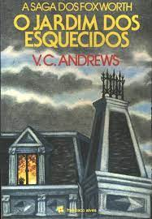

📘 Estante de Livros
Página que simula uma estante virtual. Criada com HTML semântico e CSS, com estrutura acessível.
← Voltar ao PortfólioA Casa da Floresta
Sinopse
As origens de Avalon reveladas em mais um best-seller de Marion Zimmer Bradley. "As brumas de Avalon", clássica releitura do mito arturiano sob a perspectiva feminina, é a obra-prima da autora.
Ao longo dos anos após a escrita do primeiro volume, Bradley se dedicou aos demais romances do chamado Ciclo de Avalon...
Fonte: Google Books
| Data da Primeira Publicação | Autor(a) | Idioma Original | Gêneros |
|---|---|---|---|
| 01 de Abril de 1994 | Marion Zimmer Bradley | Inglês | Literatura fantástica, Ficção histórica, Romance de amor |
O Senhor dos Anéis

Sinopse
O volume inicial de "O Senhor dos Anéis", lançado originalmente em julho de 1954, foi o primeiro grande épico de fantasia moderno...
A Sociedade do Anel começa no Condado, a região rural do oeste da Terra-média onde vivem os diminutos e pacatos hobbits...
Fonte: Google Books
| Data da Primeira Publicação | Autor(a) | Idioma Original | Gêneros |
|---|---|---|---|
| 29 de Julho de 1954 | J. R. R. Tolkien | Inglês | Literatura fantástica |
O Jardim dos Esquecidos
Sinopse
Após a morte do pai, os irmãos Chris, Cath e os gêmeos Carrie e Cory são levados pela mãe, Corine, para o único lugar onde poderiam morar: a casa dos avós, conhecida como a mansão Foxworth Hall.
Enganadas achando que a nova vida seria cheia de luxos e sonhos realizados, as crianças não imaginavam que os avós as consideravam frutos do demônio...
Fonte: Google Books
| Data da Primeira Publicação | Autor(a) | Idioma Original | Gêneros |
|---|---|---|---|
| Novembro de 1979 | V.C. Andrews | Inglês | Literatura Gótica, Saga de Família. |
Doutor Sono
Sinopse
Na infância, Danny Torrance sobreviveu a uma tentativa de homicídio por parte do pai, um escritor perturbado pelos espíritos malignos do Hotel Overlook.
Já adulto, traumatizado e alcoólatra. Danny se estabelece em uma pequena cidade, onde consegue um emprego no hospital local...
Fonte: Google Books
| Data da Primeira Publicação | Autor(a) | Idioma Original | Gêneros |
|---|---|---|---|
| 24 de Setembro de 2013 | Stephen King | Inglês | Terror |
O Aliciador
Sinopse
Em seu romance de estréia, o escritor italiano Donato Carrisi surpreendeu e arrebatou a crítica e o público ao embrenhar-se por um gênero até então fortemente atribuído aos grandes escritores americanos.
Presente nas listas de best sellers dos principais jornais da Itália logo em seu lançamento, com mais de 180 mil exemplares vendidos...
Fonte: Google Books
| Data da Primeira Publicação | Autor(a) | Idioma Original | Gêneros |
|---|---|---|---|
| 2009 | Donato Carrisi | Italiano | Thriller Criminal |